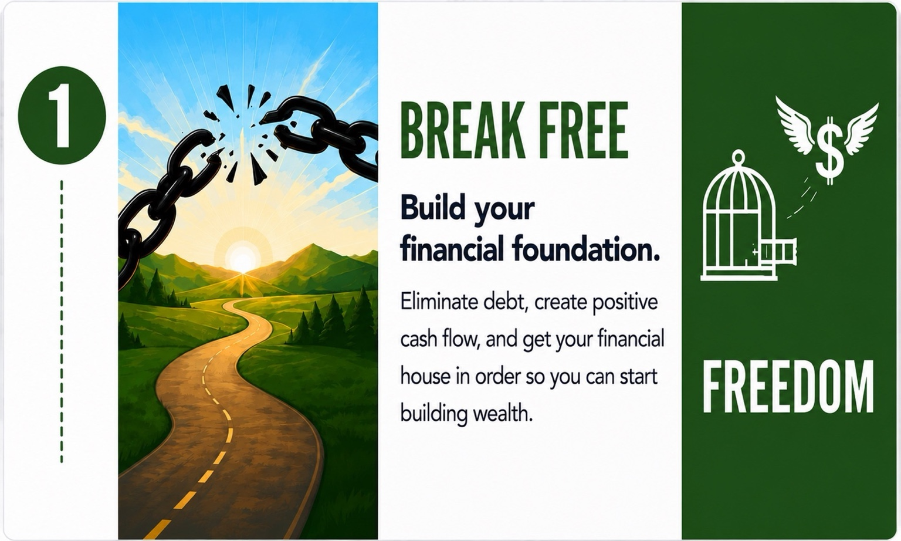
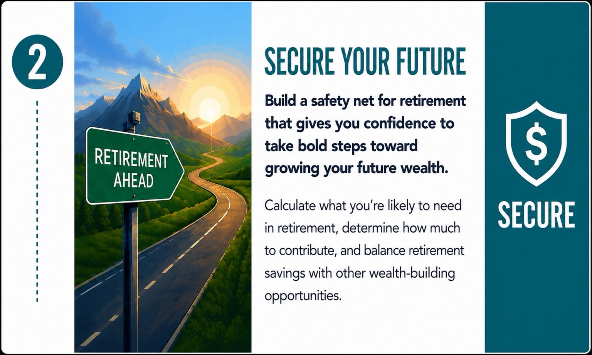
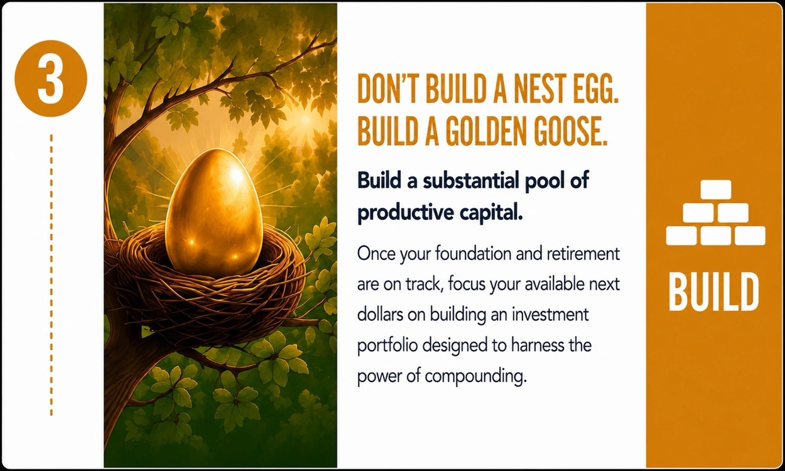
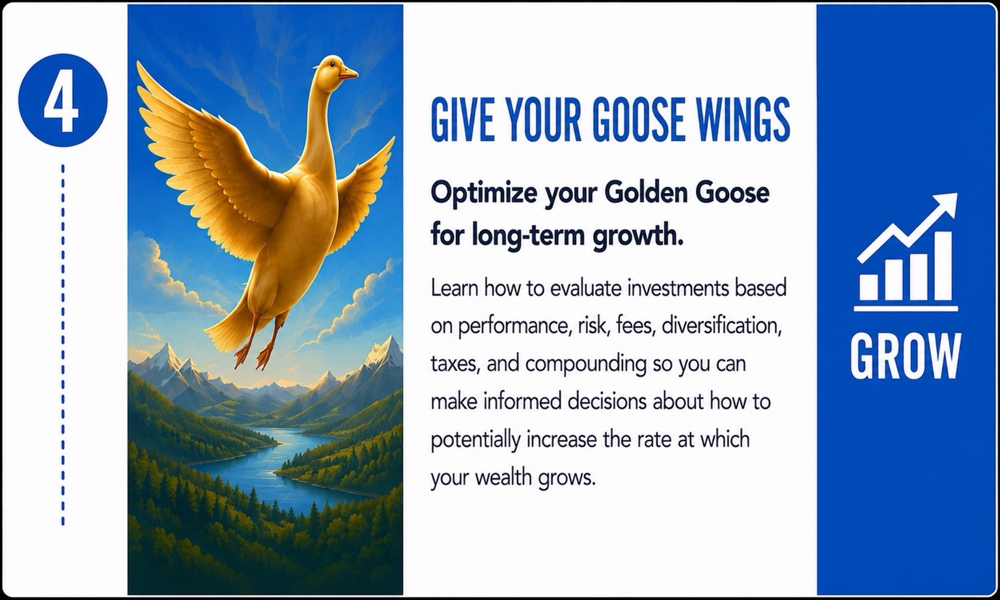
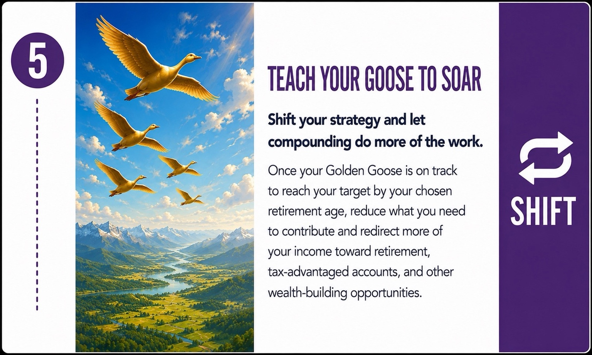
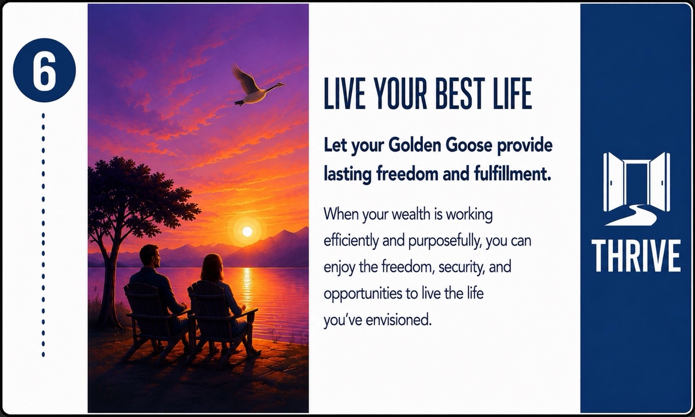

STEP 1
BREAK FREE
Build your financial foundation.
Eliminate debt, create positive cash flow, and get your financial house in order so you can start building wealth.
Explore Step 1The Next Steps Wealth-Building Journey provides a clear progression from building your financial foundation to creating lasting wealth and the freedom to live the life you’ve envisioned.

Eliminate debt, create positive cash flow, and get your financial house in order so you can start building wealth.
Explore Step 1
Calculate what you’re likely to need in retirement, determine how much to contribute, and balance retirement savings with other wealth-building opportunities.
Explore Step 2
Once your financial foundation and retirement are on track, focus your available next dollars on building a substantial pool of productive capital designed to harness the power of compounding.
Explore Step 3
Learn how to evaluate investments based on performance, risk, fees, diversification, taxes, and compounding so you can make informed decisions about how to potentially increase the rate at which your wealth grows.
Explore Step 4
Once your Golden Goose is on track to reach your target by your chosen retirement age, reduce what you need to contribute and redirect more of your income toward retirement, tax-advantaged accounts, and other wealth-building opportunities.
Explore Step 5
When your wealth is working efficiently and purposefully, you can enjoy the freedom, security, and opportunities to live the life you’ve envisioned.
Explore Step 6